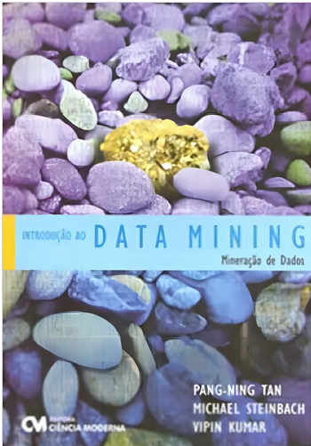
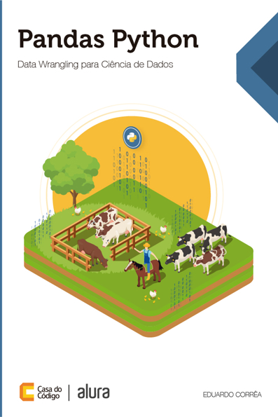
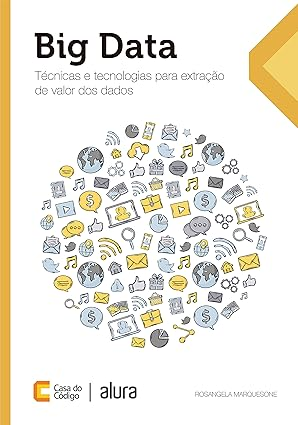
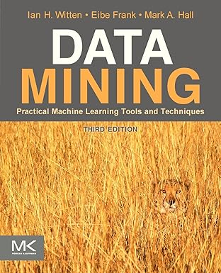

Apresentação do Curso XXX
GAC127
Mineração de Dados
2026/1
Departamento de Computação Aplicada - UFLA
Conteúdo Programático
- Introdução à Mineração de Dados.
- Processo de Descoberta de Conhecimento em Bases de Dados.
- Pré-processamento de Dados.
- Tarefas e Técnicas de Mineração de Dados:
- Extração de Regras de Associação.
- Extração de Padrões de Sequência.
- Agrupamento.
- Classificação.
- Regressão.
- Metodologias de avaliação da qualidade do conhecimento extraído.
- Projetos de implementação abordando os conceitos apresentados na disciplina.
Objetivos
Ao final do curso é esperado que o aluno:
- Conheça todas as etapas envolvidas no processo de descoberta de conhecimento.
- Tenha aprendido sobre as tarefas de mineração de dados e seus principais algoritmos.
- Seja capaz de implementar softwares/sistemas que realizem análises de dados a partir das técnicas apresentadas no curso.
GAC127 em 2026/1
17 semanas de curso:
- Aulas teóricas (17 semanas): 09/03/2026 a 04/07/2026.
- Aulas práticas (17 semanas): 09/03/2026 a 04/07/2026.
- Avaliação adicional (1 semana): 06/07/2026.
Avaliações
- Prova 1: 35 pontos.
- Prova 2: 35 pontos.
- Trabalho Prático: 30 pontos.
Observações Importantes
- A aferição de frequência será realizada por chamada oral uma vez em cada dia de aula presencial em qualquer momento entre o início e o término da mesma.
- Para ter presença na aula prática, além de comparecer à aula, o aluno deve fazer e entregar a(s) atividade(s) proposta(s) na aula.
- Em eventual aula não presencial (ANP), a presença estará condicionada ao preenchimento de questionário ou entrega de exercício disponibilizado no Campus Virtual.
- Para ter presença na aula prática, além de comparecer à aula, o aluno deve fazer e entregar a(s) atividade(s) proposta(s) na aula.
Observações Importantes
- As provas deverão ser realizadas individualmente.
- O conteúdo avaliado em cada prova é todo aquele dado até a semana anterior à da realização da prova.
- Revisões de provas serão feitas no máximo até 15 dias letivos após a divulgação das notas.
- Qualquer entrega de material (exercícios, questionários etc.) deve ser feita única e exclusivamente por meio do Campus Virtual.
Observações Importantes
- Exercícios, questionários e provas entregues também serão avaliados quanto a cópias e fraudes.
- Os alunos podem discutir a resolução dos exercícios com os colegas, mas essa discussão deve ser limitada ao campo das ideias, sem o compartilhamento de implementações.
- Cada aluno deverá entregar a sua própria versão da resolução dos mesmos.
- As cópias/fraudes resultarão em nota zero e abertura de processo disciplinar.
- Segunda chamada de atividades avaliativas: apenas para alunos com pedidos de substituição de atividades acadêmicas aprovados pela PRG.
Plágio
O que pode ser enquadrado como plágio?
- Produzir individualmente uma implementação original, mas revelar sua implementação a terceiros.
- Atividades individuais feitas em grupo.
- Atividades de alunos diferentes com partes muito semelhantes.
- Recrutamento de outras pessoas para realizar as atividades no lugar do aluno.
- Entregar soluções obtidas de terceiros (inclusive aquelas disponibilizadas na internet).
Recuperação
Para os alunos que não alcançarem 60 pontos no final do semestre (NF), será dada uma prova adicional avaliando todo o conteúdo da disciplina.
- Para se obter a nota final recuperada (NFR) será calculada a média aritmética entre a nota da prova adicional e a nota final do semestre antes da prova adicional (NF).
Bibliografia

- TAN, Pang-Ning; STEINBACH, Michael; KUMAR, Vipin. Introdução ao Data Mining: Mineração de Dados. Rio de Janeiro, RJ: Ciencia Moderna, 2009.

- CORRÊA, Eduardo. Pandas Python: Data Wrangling para Ciência de Dados. São Paulo: Casa do Código, 2020. E-book.
Bibliografia

- MARQUESONE, Rosangela. Big Data: Técnicas e Tecnologias para Extração de Valor dos Dados. São Paulo: Casa do Código, 2016. E-book.

- WITTEN, I. H; FRANK, Eibe; HALL, Mark A. Data mining: Practical Machine Learning Tools and Tecniques. 3rd ed. Morgan Kaufmann, 2011.